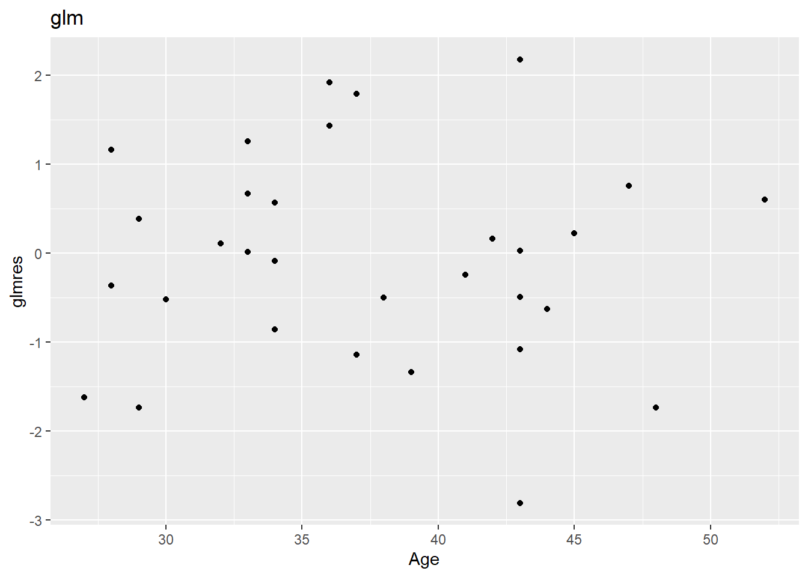

(2 points) Recall the obesity problem from Homework 1. The data are as follows:
CVD Death
Yes No
Obese 16 2045
Not obese 7 1044
Using Poisson log linear regression, test for independence between obesity and CVD death outcome. (Hint: this is equivalent to testing that the interaction term in the model is zero.) How does your answer compare to a chi-square test on the same data?
Pearson's Chi-squared test with Yates' continuity correction
data: o_tab
X-squared = 0.014031, df = 1, p-value = 0.9057
Chi squared test for independence suggests evidense of an association.
The chi squared test of independence and the log-linear regression chi squared stat are the same. At least, they are if I turn off the continuity correction
2. Elephants
(3 points) Although male elephants are capable of reproducing by 14 to 17 years of age, younger adult males are usually unsuccessful in competing with their larger elders for the attention of receptive females. Since male elephants continue to grow throughout their lifetimes, and since larger males tend to be more successful at mating, the males most likely to pass their genes to future generations are those whose characteristics enable them to live long lives. Joyce Poole studied a population of African elephants in Amboseli National Park, Kenya, for 8 years. You can explore this data set in case2201 in the Sleuth3 library. This data frame contains the number of successful matings and ages (at the study’s beginning) of 41 male elephants.
Give an estimated model for describing the number of successful matings as a function age, using
A. Model w/ lm and sqrt
simple linear regression after taking a square root transformation of the number of successful matings;
lmsqrt <-lm(sqrt(Matings)~Age, data = df)summary(lmsqrt)
Call:
lm(formula = sqrt(Matings) ~ Age, data = df)
Residuals:
Min 1Q Median 3Q Max
-1.90532 -0.33654 0.07767 0.45871 1.09468
Coefficients:
Estimate Std. Error t value Pr(>|t|)
(Intercept) -0.81220 0.56867 -1.428 0.161187
Age 0.06320 0.01561 4.049 0.000236 ***
---
Signif. codes: 0 '***' 0.001 '**' 0.01 '*' 0.05 '.' 0.1 ' ' 1
Residual standard error: 0.6493 on 39 degrees of freedom
Multiple R-squared: 0.296, Adjusted R-squared: 0.2779
F-statistic: 16.4 on 1 and 39 DF, p-value: 0.0002362
\[
sqrt(Matings) = -.81 + .063Age
\] First mating around 12.9 years.
B. lm w/ log + 1
simple linear regression after taking a logarithmic transformation (after adding 1);
df$mlp1 <-log(df$Matings +1)lmlp1 <-lm(mlp1~Age, data = df)summary(lmlp1)
Call:
lm(formula = mlp1 ~ Age, data = df)
Residuals:
Min 1Q Median 3Q Max
-1.49087 -0.33939 0.06607 0.35376 0.81171
Coefficients:
Estimate Std. Error t value Pr(>|t|)
(Intercept) -0.69893 0.45861 -1.524 0.135567
Age 0.05093 0.01259 4.046 0.000238 ***
---
Signif. codes: 0 '***' 0.001 '**' 0.01 '*' 0.05 '.' 0.1 ' ' 1
Residual standard error: 0.5237 on 39 degrees of freedom
Multiple R-squared: 0.2957, Adjusted R-squared: 0.2776
F-statistic: 16.37 on 1 and 39 DF, p-value: 0.0002385
\[
log(Matings + 1) = -0.69893 + 0.05093Age
\]
0.69893/0.05093
[1] 13.72335
First mating around 13.7 years.
C. log-linear
log-linear regression.
Be sure to examine residuals from each of these models. How do the models compare? Please be specific. Is there evidence of over dispersion? If so, fit another model and report results from that model. If not, why not?
glm1 <-glm(data = df, family = poisson, Matings~Age)summary(glm1)
Call:
glm(formula = Matings ~ Age, family = poisson, data = df)
Coefficients:
Estimate Std. Error z value Pr(>|z|)
(Intercept) -1.58201 0.54462 -2.905 0.00368 **
Age 0.06869 0.01375 4.997 5.81e-07 ***
---
Signif. codes: 0 '***' 0.001 '**' 0.01 '*' 0.05 '.' 0.1 ' ' 1
(Dispersion parameter for poisson family taken to be 1)
Null deviance: 75.372 on 40 degrees of freedom
Residual deviance: 51.012 on 39 degrees of freedom
AIC: 156.46
Number of Fisher Scoring iterations: 5
df |>ggplot() +aes(x = Age, y = glmres) +geom_point()+labs(title ="glm")

There are a couple of values in the glm that are on the edge of the plus or minus 2 cutoff for outliers. That same low point at age equal to 43 is a little off in all the residual plots.
nb <-glm.nb(data = df, Matings~Age)summary(nb)
Call:
glm.nb(formula = Matings ~ Age, data = df, init.theta = 16.48629005,
link = log)
Coefficients:
Estimate Std. Error z value Pr(>|z|)
(Intercept) -1.58837 0.59393 -2.674 0.00749 **
Age 0.06887 0.01519 4.534 5.8e-06 ***
---
Signif. codes: 0 '***' 0.001 '**' 0.01 '*' 0.05 '.' 0.1 ' ' 1
(Dispersion parameter for Negative Binomial(16.4863) family taken to be 1)
Null deviance: 65.199 on 40 degrees of freedom
Residual deviance: 44.498 on 39 degrees of freedom
AIC: 157.92
Number of Fisher Scoring iterations: 1
Theta: 16.5
Std. Err.: 25.7
2 x log-likelihood: -151.923
Call:
lm(formula = sqrt(Matings) ~ Age, data = df)
Residuals:
Min 1Q Median 3Q Max
-1.90532 -0.33654 0.07767 0.45871 1.09468
Coefficients:
Estimate Std. Error t value Pr(>|t|)
(Intercept) -0.81220 0.56867 -1.428 0.161187
Age 0.06320 0.01561 4.049 0.000236 ***
---
Signif. codes: 0 '***' 0.001 '**' 0.01 '*' 0.05 '.' 0.1 ' ' 1
Residual standard error: 0.6493 on 39 degrees of freedom
Multiple R-squared: 0.296, Adjusted R-squared: 0.2779
F-statistic: 16.4 on 1 and 39 DF, p-value: 0.0002362
An increase of 1 year in Age results in a .06 more matings. This one has a lower intercept than the log plus one lm.
summary(lmlp1)
Call:
lm(formula = mlp1 ~ Age, data = df)
Residuals:
Min 1Q Median 3Q Max
-1.49087 -0.33939 0.06607 0.35376 0.81171
Coefficients:
Estimate Std. Error t value Pr(>|t|)
(Intercept) -0.69893 0.45861 -1.524 0.135567
Age 0.05093 0.01259 4.046 0.000238 ***
---
Signif. codes: 0 '***' 0.001 '**' 0.01 '*' 0.05 '.' 0.1 ' ' 1
Residual standard error: 0.5237 on 39 degrees of freedom
Multiple R-squared: 0.2957, Adjusted R-squared: 0.2776
F-statistic: 16.37 on 1 and 39 DF, p-value: 0.0002385
An increase of 1 year in Age results in a .05 more matings.
sgl <-summary(glm1)sgl
Call:
glm(formula = Matings ~ Age, family = poisson, data = df)
Coefficients:
Estimate Std. Error z value Pr(>|z|)
(Intercept) -1.58201 0.54462 -2.905 0.00368 **
Age 0.06869 0.01375 4.997 5.81e-07 ***
---
Signif. codes: 0 '***' 0.001 '**' 0.01 '*' 0.05 '.' 0.1 ' ' 1
(Dispersion parameter for poisson family taken to be 1)
Null deviance: 75.372 on 40 degrees of freedom
Residual deviance: 51.012 on 39 degrees of freedom
AIC: 156.46
Number of Fisher Scoring iterations: 5
sgl$coefficients |>exp()
Estimate Std. Error z value Pr(>|z|)
(Intercept) 0.2055619 1.723955 0.05476055 1.003682
Age 1.0711071 1.013841 148.02412630 1.000001
An increase of 1 year in Age results in a 7% increase in matings.
pchisq(51.012, df =39, lower.tail = F)
[1] 0.09425638
p-values for all three models are low, but glm is the highest.
Conceptual Questions
3. Log-lin v Linear transfromed.
(2 points) What is the difference between a log-linear model and a linear model after the log transformation of the response?
If the log transformation results in constant variance then, MLR could be used. However, glms don’t assume constant variance or normality.
Multiplicative vs additivity in error terms is the major difference. In MLR additivity is assumed.
4. Elephants
(3 points) This question refers to the elephant mating data from question 2 above.
A.
Both the binomial and the Poisson distributions provide probability models for random counts. Which distribution is more appropriate to model the number of successful matings for male African elephants, and why?
Elephant mating doesn’t have fixed sample size or constant probability, so Poisson is better in this instance.
B
In the following plot, we see that the spread of responses is larger for larger values of the mean response. Is this something to be concerned about if we perform a Poisson log-linear regression?
Poisson assumes that variance will go up with mean. The lambda parameter is the only parameter, if one goes up so does the other.
C
Performing a Poisson log-linear regression results in the following output:
Estimate Std. Error z value Pr(> |z|)
(Intercept) -1.58201 0.54462 -2.905 0.00368 **
Age 0.06869 0.01375 4.997 5.81e-07 ***
Residual Deviance: 51.01 on 39 degrees of freedom
What are of the mean and variance of the distribution of counts of successful matings (in 8 years) for elephants who are aged 25 years at the beginning of the observation period? What are the mean and variance for elephants who are aged 45 years?
I do not know what that means, but lets try and figure it out. 25 to 33 year old elephants. Distribution of counts suggests we are not talking about the glm at all. I guess it wants me to filter by age and get the mean and variance.
d <- df |>filter(Age >24& Age <34)mean(d$Matings)
[1] 1.666667
sd(d$Matings)^2
[1] 1.529412
The mean and variance of the distribution of Matings for elephants 25 to 33 are 1.66 and 1.53 respectively.